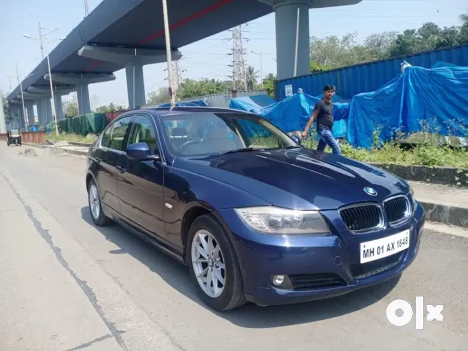

Immaculate condition, Non accidental, Non flooded, Automatic climate control, Rear AC vents, Cruise control, Electrically adjustable front seats. For more details contact Balaji motors.
ADDITIONAL VEHICLE INFORMATION:
ABS: Yes
Accidental: No
Adjustable External Mirror: Power
Adjustable Steering: Yes
Air Conditioning: Automatic Climate Control
Number of Airbags: 6 airbags
Alloy Wheels: Yes
Anti Theft Device: Yes
Aux Compatibility: Yes
Bluetooth: Yes
Color: Blue
Cruise Control: Yes
